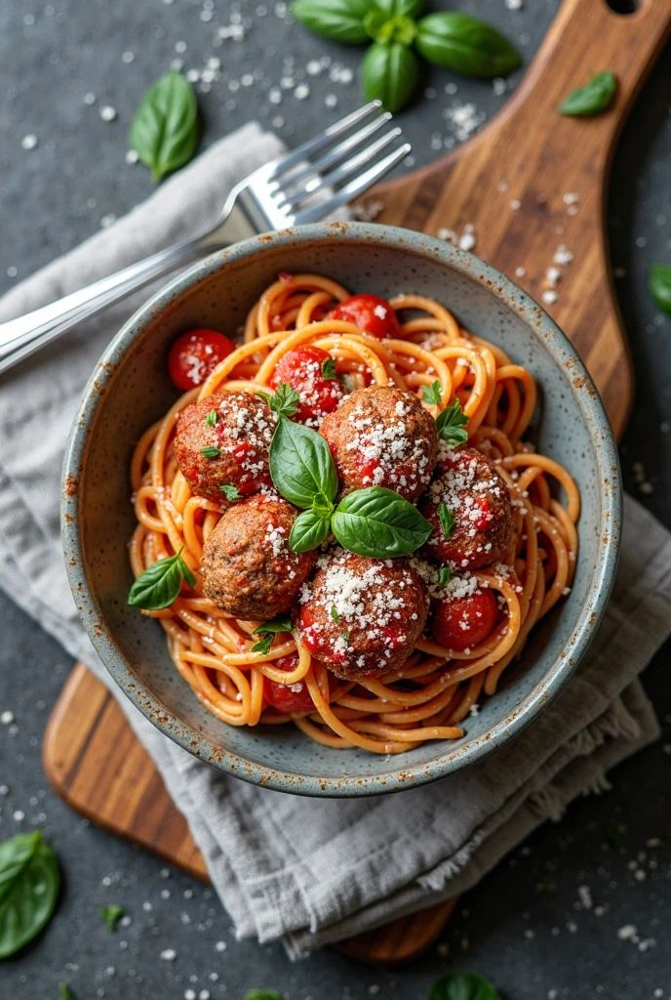

I made these noodles on a night when the apartment felt too quiet. Even the microwave felt louder than me. I wasn't really hungry—just needing for something warm. The steam from the pot made the room feel less empty. Not perfect, not fancy... but enough.